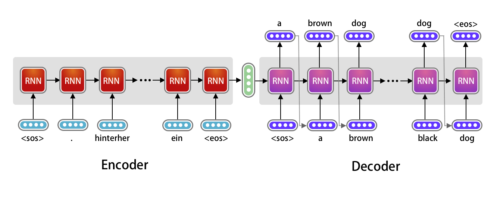
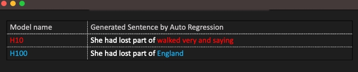

Sentence Generation with an LSTM Language Model
A recurrent network that reads a sentence one word at a time and predicts the next, then writes new sentences by sampling from itself. The real question was which knobs matter, so I changed them one at a time.
- Language modelling
- Natural Language Processing course
- University of Tehran · 2021
- PyTorch

8models in four paired experiments
1hyperparameter changed per pair, all else fixed
50epochs each, batch 256
Perplexityplus the quality of generated sentences
The model
- EmbedEach word index becomes a dense vector (50 or 200 dimensions).
- RecurStacked LSTM layers carry a hidden state through the sentence, gating what to keep and forget.
- PredictA softmax over the vocabulary gives P(next word | words so far); training minimises cross-entropy, i.e. log-perplexity.
- GenerateSample a word, feed it back in, repeat until the end-of-sentence token.
Which hyperparameter matters?
Pick an experiment
Interactive